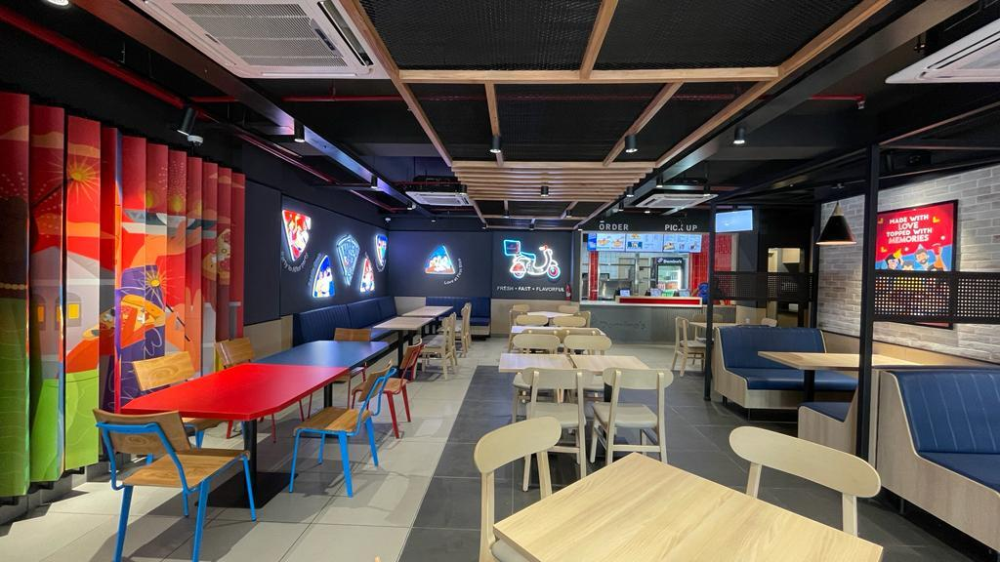
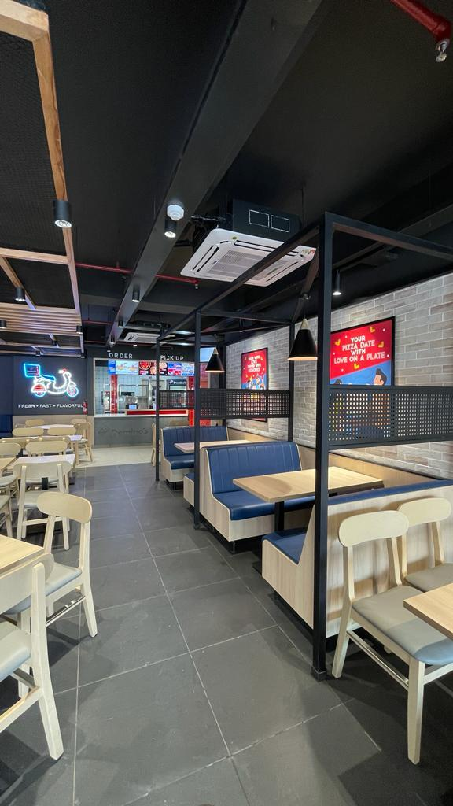
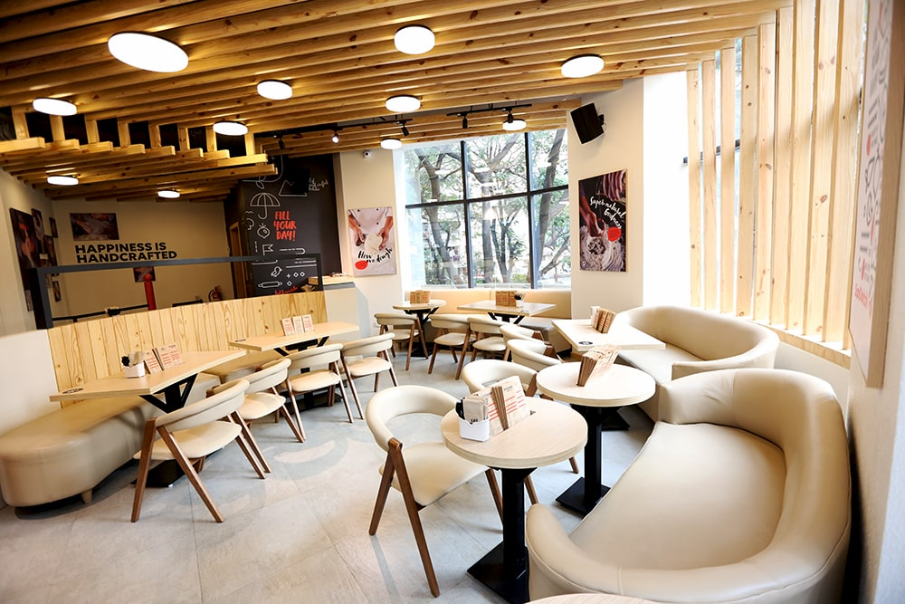

Speed
Every extra step in a repetitive workflow matters. We plan around staff movement, queue logic and handoff points.


QSR design is performance design. A quick-service restaurant has only a few minutes to do a lot of work: attract attention, explain the brand, move a queue, take an order, produce food, manage delivery, turn tables and make the experience feel consistent every time.
That is why QSR design cannot stop at interiors. The layout, counter, kitchen, MEP, signage, brand system and build method all need to support speed and repeatability.
SprintCo brings decades of F&B experience to QSR projects, with a live portfolio that includes brands and formats such as Pizza Hut, Sandoitchi, Domino’s, Haldiram and other multi-location concepts.

Every extra step in a repetitive workflow matters. We plan around staff movement, queue logic and handoff points.

The space should support peak demand without the customer journey collapsing into one crowded zone.

Equipment, utilities, production flow and service openings should be coordinated with the front-of-house plan.

Digital orders and delivery riders need a defined place in the layout, not a last-minute corner at the cashier.

The outlet should feel unmistakably like the brand even when footprint, landlord conditions and city change.

Repeatable details, material standards and modular elements help future sites move faster with fewer reinventions.
| First / prototype outlet | Multi-site rollout |
|---|---|
| Test the customer journey | Standardise what worked |
| Resolve kitchen and MEP interfaces | Create repeatable service criteria |
| Develop brand moments | Define mandatory vs adaptable elements |
| Review fabrication details | Convert suitable elements into modules / repeatable SKUs |
| Capture site lessons | Build a rollout checklist and drawing standards |
| Measure operational friction | Improve the next site rather than copying errors |

Our Pizza Hut project follows a performance-led methodology built around how guests queue, order, seat and return. Counter logic, seating flow, surfaces and lighting were all planned for a fast, warm, high-turnover outlet that is still unmistakably Pizza Hut, connecting brand execution with operational planning.
View the Pizza Hut case study
Sandoitchi is a compact QSR environment designed to work for both quick visits and longer casual stays, using a clear façade, bold signage and a warm interior language. The brand has since extended its design language to a new outlet in Ahmedabad.
View the Sandoitchi case studyOur QSR portfolio also includes Domino’s Pizza, Haldiram, Dosa Coffee, Punjab Grill and other quick-service formats.
The fastest QSRs are not necessarily the most visually stripped-down. The objective is to put complexity where it creates value and simplify where repetition matters.
A memorable colour system, counter language, material palette or graphic moment can carry the brand across sites while furniture modules, service details and back-of-house systems become more standardised.
QSR kitchens can have high connected loads, concentrated heat, exhaust requirements, drainage needs and tightly packed equipment. Early coordination between kitchen, architecture and MEP helps prevent service routes from colliding with the customer-facing design after construction has started.
SprintCo’s offering links to FlatPackCo for off-site manufactured, modular build elements. Modularisation can cut typical build timelines by up to 50% for suitable projects.
For QSR rollouts, that approach is most powerful when the concept is designed for repeatability from the beginning rather than converted into modules after every detail is already fixed.
QSR design puts greater emphasis on queue, ordering, pickup, kitchen throughput, delivery, durability, brand repetition and fast customer decisions.
Yes. SprintCo’s service offering includes rollout and expansion, with standardised design thinking adapted to different site conditions.
SprintCo lists MEP design as a core offering. The exact engineering deliverables and consultant interfaces should be defined in the project scope.
Early decisions, integrated MEP planning, parallel procurement and suitable off-site/modular fabrication can reduce site time. Speed should come from coordination, not skipped documentation.
Yes. A rollout system can define brand constants while allowing controlled site- or city-specific adaptations in graphics, materials or storytelling.

Share the site, menu, service model and expansion plan. SprintCo can help define the outlet journey and identify what should be unique, what should be standard and what can be modularised.
Discuss Your QSR